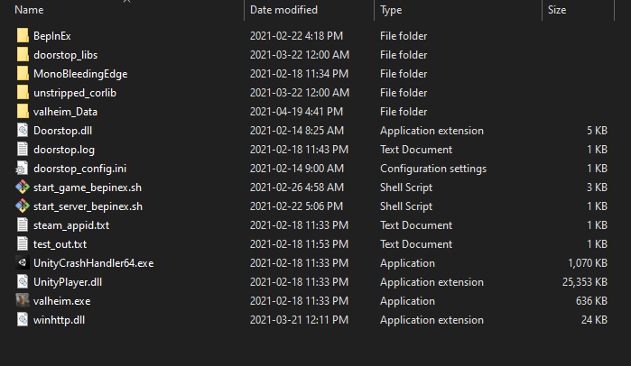
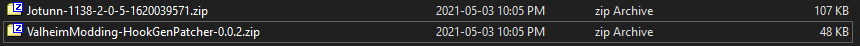
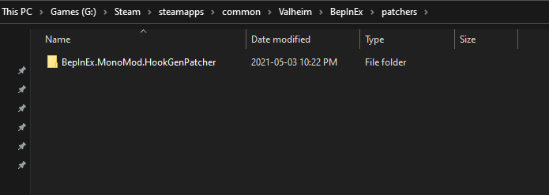
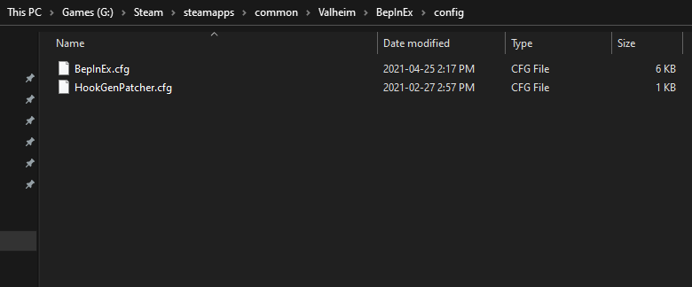
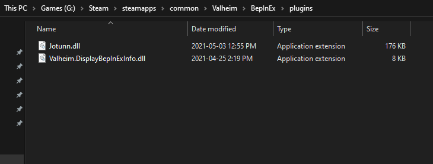
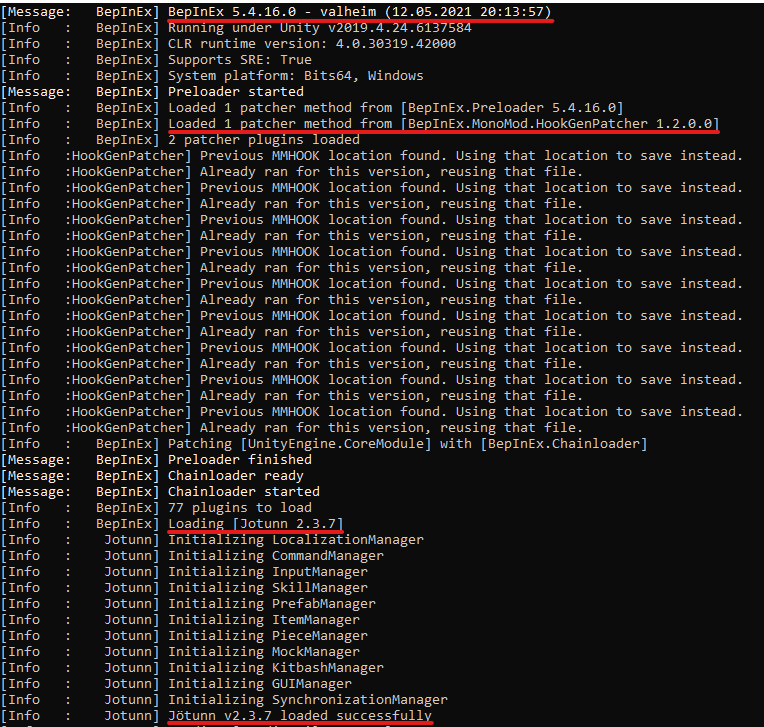

Manual Installation Guide
This section will cover how to manually install Jötunn, without using a mod manager. This guide applies to client installations as well as installations on a dedicated server, though paths on a dedicated server installation might vary slighty depending on the server's operating system.
0. Installing BepInEx
Before we even start, be sure that you have BepInEx downloaded and installed correctly. (If you have any other mods or rented a "modding enabled" server, odds are you'll have this installed.)
If this is a manual install, extract the ZIP archive and move everything from BepInEx_Valheim into your Valheim directory (eg. C:\<PathToYourSteamLibary>\steamapps\common\Valheim).
It should look something like this:

1. Downloading Jötunn
First, download Jötunn from your prefered public mirror (Note: You can find test builds through the public Discord):
Secondly, download the MMHookGen dependency, if you have not already got it:
If you downloaded both, you should have two ZIP files like so (names may vary depending on download source and version, but contents should be the same):

2. Extracting
Now that you have everything downloaded, you'll need to extract them in order to use the data inside them, uncompressed.
First, navigate to your Valheim BepInEx directory (eg. C:\<PathToYourSteamLibary>\steamapps\common\Valheim\BepInEx). Now, we can extract them:
For MMHookGen: Extract the ZIP and put the patchers and config folders inside your BepInEx folder. These folders, in a clean installation, should look like so:


For Jötunn: Extract the ZIP, and put the Jotunn.dll file into your BepInEx plugins folder. These folders, in a clean installation, should look like so:

3. Launch Valheim
That's it, you're done! Now you can launch Valheim and enjoy your modding!
You can tell it worked by looking at the console output, which, depending on your environment, should look something like this, telling you it loaded BepInEx, HookGenPatcher and Jötunn:

Note
Your first run of the game may take a few seconds longer than it would without any mods. This is normal. This is due to MMHookGen creating the MMHook DLL files that are needed for Jötunn and various mods to run. This will only take longer on first install, and after Valheim updates.